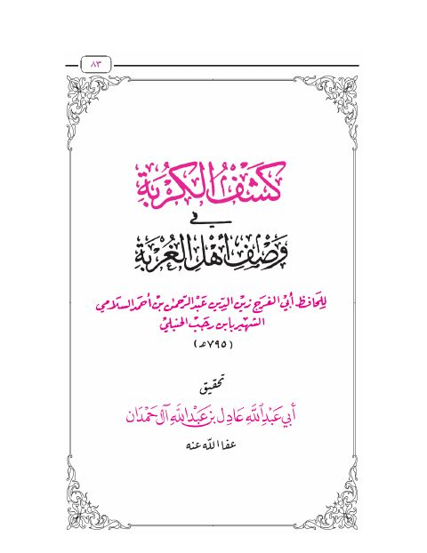

Downloads need an internet connection.
كشف الكربة في وصف أهل الغربة- ملون
Authors: ابن رجب الحنبلي
Editors: عادل بن عبد الله الحمدان
▫️ العنوان: كشف الكربة في وصف أهل الغربة- ملون ▪️ المؤلف: #عبد_الرحمن_بن_أحمد_بن_رجب_الحنبلي ▫️ المحقق: #عادل_بن_عبد_الله_الحمدان ▪️ الطبعة: 1 ▫️ عدد الأجزاء: 1 ▪️ الصفحات: 32 ▫️ نوع الوعاء: #كتاب ▪️ التصنيف الرئيسي: #الزهد_والرقائق ۪